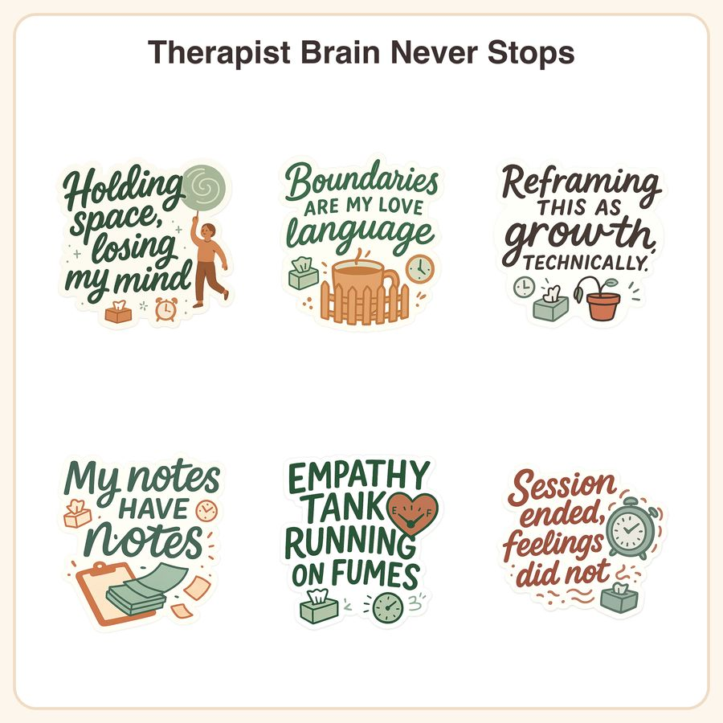

$4.50
View on EtsyHook: The mental load nobody sees, illustrated in soft sage-and-terracotta so you can finally laugh about it instead of crying about it. 🌿 This 6-sticker pack was made for therapists and counselors who need a knowing smile between sessions. What's included: • 6 individual transparent PNG files, 1024x1024px, hand-lettered brush script paired with rounded flat illustrations • 1 printable sticker sheet (PDF, letter size) with all 6 designs laid out for at-home printing • Small doodle accents like tissue boxes and clocks throughout the set The designs: 1. "Holding space, losing my mind" — a figure holding a lollipop, calm on the outside 2. "Boundaries are my love language" — a tidy little fence around a mug of tea 3. "Reframing this as growth, technically" — a small potted plant, doing its best 4. "My notes have notes" — folded papers stacked on a clipboard 5. "Empathy tank running on fumes" — a heart-shaped gauge tilting toward empty 6. "Session ended, feelings did not" — a plain alarm clock, ticking away How to use: Download and unzip the files. Use the transparent PNGs with Cricut, Silhouette, or any print-and-cut software for die-cut stickers, planners, laptop decals, or client-facing decor. Print the sticker sheet at home or through a print shop on sticker paper. File formats & sizes: PNG (transparent, 1024x1024px) x6, PDF sticker sheet (print-ready, US letter) License: For personal use and small-business commercial use (up to 500 physical units sold). Please do not resell, share, or redistribute the digital files themselves. Honest disclosure: These designs were created by our small shop with the help of AI tools as part of our creative process, then reviewed and finalized by us for quality and consistency. No physical product will be shipped — this is a digital download only.